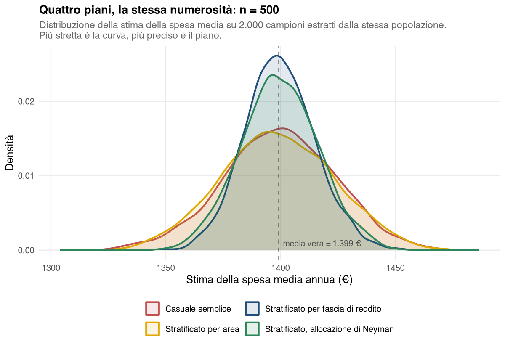

33 Caso studio — Progettare l’indagine: quante interviste, e a chi
33.1 La situazione
La direzione marketing di una catena retail vuole conoscere la spesa media annua dei propri clienti a programma fedeltà. Il budget copre 500 interviste telefoniche e la richiesta è precisa: la stima deve avere un margine di errore di ±50 € al 95% di confidenza.
Le domande da risolvere prima di alzare la cornetta sono due:
- 500 interviste bastano per il margine richiesto?
- Conviene estrarle a caso fra tutti i clienti, oppure distribuirle in qualche modo?
La seconda domanda sembra secondaria. È invece quella che, a parità di budget, decide se il margine sarà ±47 € o ±30 €.
33.2 I dati
Il frame è l’intero archivio del sistema di gestione dei clienti (CRM, customer relationship management): 5 000 clienti con area geografica, età, sesso, reddito dichiarato, punto vendita di riferimento, anni di fedeltà e spesa annua.
C’è una particolarità che in una ricerca vera non si ha mai: qui conosciamo la risposta. Avendo il frame completo, la spesa media vera della popolazione è calcolabile e vale 1 399,2 € (deviazione standard 575,7 €). È artificiale, ma è ciò che permette di fare l’unica verifica che conta davvero: controllare se un metodo, applicato alla cieca, ci avrebbe portato vicino al valore vero.
33.3 Passo 1 — Quante interviste servono
Menu: Analisi → AnalisiMercato → Campionamento → Numerosità campionaria
Da un’indagine pilota dell’anno precedente si sa che la spesa varia attorno a \(\sigma \approx 580\) €. Si compila il pannello: Parametro → Media, Δ → 50, Confidenza → 95, σ → 580, N → 5000, schema di campionamento casuale semplice senza reinserimento (SSR).
Parametri dell’indagine
| Parametro | N | Δ | Confidenza | z (α/2) | P / σ | Schema |
|---|---|---|---|---|---|---|
| Media | 5.000 | 50,00 | 95% | 1,96 | 580,00 | Senza reinserimento (SSR) |
Numerosità campionaria
| n teorico | n consigliato | Frazione f = n/N | Var attesa dello stimatore | Errore standard atteso |
|---|---|---|---|---|
| 468,56 | 469 | 0,094 | 650,12 | 25,50 |
Lettura. Servono 469 interviste: le 500 del budget bastano, con un piccolo margine. Senza il fattore correttivo per popolazione finita (fpc, finite population correction) ne servirebbero 517 (\(n_0 = z^2\sigma^2/\Delta^2 = 516{,}9\)): il frame è abbastanza piccolo — \(f = 9{,}4\%\) — perché la correzione tolga una cinquantina di interviste (§ P-07).
33.4 Passo 2 — Il piano più semplice: estrarre a caso
Menu: Analisi → AnalisiMercato → Campionamento → Campionamento casuale semplice
Variabile identificativa → id_cliente, n → 500, Seed → 20260521, Estrai il campione (frequenza nel campione) attivo.
Riepilogo del campione
| N (popolazione) | n richiesto | n unità distinte | n estrazioni totali | Frazione f = n/N | Schema | Seed |
|---|---|---|---|---|---|---|
| 5.000 | 500 | 500 | 500 | 0,10 | Senza reinserimento (SSR) | 20260521 |
Il modulo aggiunge al foglio dati la colonna freq_SSR, che vale 1 per le unità estratte. Con Dati → Calcola si costruisce spesa_campione, con la formula IF(freq_SSR == 1, spesa_annua): conserva la spesa delle sole unità estratte e lascia vuote le altre, come in § P-14. La si analizza con Intervalli di confidenza (Variabile → spesa_campione, che essendo numerica fa stimare la media; Applica fattore correttivo attivo e poi N → 5000):
Intervallo di confidenza
| Confidenza | Stima | Errore standard | Ampiezza ± Δ | LB | UB |
|---|---|---|---|---|---|
| 95% | 1.415,24 | 25,75 | 50,46 | 1.364,78 | 1.465,70 |
Lettura. La stima è 1 415,24 € e l’intervallo va da 1 364,78 a 1 465,70 (estremo inferiore e superiore, LB e UB, lower e upper bound): contiene il valore vero (1 399,2 €), come deve accadere nel 95% dei campioni. Il margine effettivamente stimato, ±50,46 €, è molto vicino all’obiettivo di ±50 € fissato in fase di progetto. La piccola differenza dipende dalla variabilità osservata nel campione, una deviazione standard di circa 607 € contro i 580 € ipotizzati nel dimensionamento: ha più che compensato le 31 interviste in più rispetto alle 469 richieste. Il piano funziona.
La domanda successiva è se si poteva fare meglio senza spendere di più.
33.5 Passo 3 — Stratificare: sì, ma su quale variabile?
Menu: Analisi → AnalisiMercato → Campionamento → Campionamento stratificato
La stratificazione non aggiunge interviste: le stesse 500 vengono distribuite fra gruppi definiti in anticipo. Il candidato più ovvio è l’area geografica, che è nel CRM e ha cinque livelli.
Allocazione per strato — Variabili di stratificazione → area, Metodo → Proporzionale, n → 500, Seed → 20260521
| Strato | N_j | W_j | σ_j | n_j | f_j = n_j / N_j |
|---|---|---|---|---|---|
| Centro | 956 | 0,19 | — | 96 | 0,10 |
| Isole | 535 | 0,11 | — | 53 | 0,10 |
| Nord-Est | 1.056 | 0,21 | — | 106 | 0,10 |
| Nord-Ovest | 1.410 | 0,28 | — | 141 | 0,10 |
| Sud | 1.043 | 0,21 | — | 104 | 0,10 |
Il secondo candidato è la fascia di reddito. Non è una colonna del dataset e va costruita: in jamovi si usa Dati → Trasforma sulla variabile reddito_k, tagliandola nei quartili (20,5 / 28,0 / 37,8 migliaia di euro) e ottenendo quattro livelli — Bassa, Medio-bassa, Medio-alta, Alta (§ T-03).
Allocazione per strato — Variabili di stratificazione → fascia_reddito, Metodo → Proporzionale, n → 500, Seed → 20260521
| Strato | N_j | W_j | σ_j | n_j | f_j = n_j / N_j |
|---|---|---|---|---|---|
| Bassa | 1.258 | 0,25 | — | 126 | 0,10 |
| Medio-bassa | 1.245 | 0,25 | — | 124 | 0,10 |
| Medio-alta | 1.250 | 0,25 | — | 125 | 0,10 |
| Alta | 1.247 | 0,25 | — | 125 | 0,10 |
Le due allocazioni si somigliano: stessa numerosità totale, praticamente la stessa frazione di campionamento in ogni strato (\(f_j \approx 0{,}10\): a meno degli arrotondamenti delle \(n_j\) il piano è autoponderato). Dall’output del campionamento non si vede alcuna differenza. La differenza sta altrove, e per vederla serve un’altra analisi.
33.6 Passo 4 — Quanto vale davvero ciascun piano
Menu: Analisi → AnalisiMercato → Campionamento → Design Effect
Il Design Effect (Deff) risponde esattamente alla domanda “quanto guadagno (o perdo) rispetto al casuale semplice, a parità di \(n\)?”. Il casuale semplice di confronto è quello del Passo 2, senza reinserimento. Con allocazione proporzionale e strati già definiti, la varianza dello stimatore stratificato dipende solo dalla variabilità della spesa che resta dentro gli strati, quella del casuale semplice dalla variabilità totale: il loro rapporto, cioè il Deff, è circa \(1 - \eta^2\). Qui \(\eta^2\) è la quota di variabilità della spesa spiegata dall’appartenenza allo strato. Si ottiene da un’analisi della varianza (ANOVA) a un fattore in jamovi (Analisi → ANOVA → ANOVA, con spesa_annua come variabile dipendente, la variabile di strato come fattore e \(\eta^2\) spuntato in Dimensione dell’Effetto) e vale 1,6% per l’area e 61,0% per la fascia di reddito. Nel modulo si usa la modalità Da due varianze, con la varianza entro gli strati espressa come quota di quella totale (\(1 - \eta^2\)) e 1 per il casuale semplice.
Il riferimento va dichiarato, perché cambia il numero. Rispetto al campionamento casuale semplice con reinserimento (SCR), che non beneficia del fattore correttivo \(1 - n/N = 0{,}90\), il Deff della fascia di reddito sarebbe circa \(0{,}390 \times 0{,}90 \approx 0{,}35\). Qui si usa il senza reinserimento, coerente con l’intervallo di confidenza del Passo 2, calcolato con il fattore correttivo; il campo del modulo si chiama comunque Varianza nel SCR di riferimento.
La Formula analitica per il piano stratificato non va alimentata con \(\eta^2\): chiede come \(R^2\) il quadrato della correlazione con una variabile continua che viene poi tagliata in \(L\) classi (§ P-15). Con \(\eta^2\) di strati già formati conterebbe due volte l’effetto del taglio, e per la fascia di reddito darebbe 0,428 invece di 0,390.
Modalità → Da due varianze, Varianza nel piano complesso → 0,984, Varianza nel SCR di riferimento → 1, Numerosità di riferimento (n) → 500
| Deff | Efficienza vs SCR | n di riferimento | Numerosità richiesta dal piano | Numerosità efficace di n unità raccolte col piano |
|---|---|---|---|---|
| 0,984 | Maggiore (Deff < 1) | 500 | 492 | 509 |
Modalità → Da due varianze, Varianza nel piano complesso → 0,390, Varianza nel SCR di riferimento → 1, Numerosità di riferimento (n) → 500
| Deff | Efficienza vs SCR | n di riferimento | Numerosità richiesta dal piano | Numerosità efficace di n unità raccolte col piano |
|---|---|---|---|---|
| 0,390 | Maggiore (Deff < 1) | 500 | 195 | 1.283 |
Lettura. Stratificare per area fa guadagnare meno del 2%: 500 interviste così distribuite valgono quanto circa 507 estratte a caso (509 con la formula d’uso del modulo). È un guadagno che non si nota e che non giustifica la complicazione del piano — perché l’area geografica, in questa popolazione, non dice quasi nulla sulla spesa.
Stratificare per fascia di reddito porta il Deff a 0,39: le stesse 500 interviste valgono quanto circa 1.110 interviste casuali. Il modulo indica 1.283, cioè \(500/0{,}39\) arrotondato per eccesso, perché usa la formula d’uso, che trascura la frazione di campionamento: qui \(f\) è del 10%, e il conto esatto dà un valore più basso (capitolo Campionamento). La sostanza non cambia: per raggiungere con il casuale semplice la precisione che il piano stratificato ottiene con 500 interviste, il budget dovrebbe più che raddoppiare.
Stratificare non è utile di per sé: è utile quando gli strati sono omogenei al loro interno e diversi fra loro rispetto alla variabile che si vuole stimare. Due piani identici nella forma — stesse 500 interviste, stessa allocazione proporzionale, stesso output di estrazione — valgono uno meno del 2% in più del casuale semplice e l’altro più del doppio. La differenza non è nel metodo, è nella variabile scelta per stratificare.
33.7 Passo 5 — La verifica: 2 000 campioni invece di uno
Il Deff è il risultato di una formula. Vale la pena controllare se le cose vanno davvero così, ripetendo l’estrazione 2 000 volte per ciascun piano e guardando quanto le stime si disperdono attorno al valore vero. Questa non è un’analisi che si fa in jamovi — è una simulazione fatta apposta per queste dispense — ma è il modo più diretto per vedere che cosa significhi “Deff = 0,39”.

| Piano | Errore standard | Margine 95% | Deff empirico | Deff atteso (1 − η²) |
|---|---|---|---|---|
| Casuale semplice (senza reinserimento) | 24,16 | ±47 € | 1,000 | — |
| Stratificato per area | 24,33 | ±48 € | 1,015 | 0,984 |
| Stratificato per fascia di reddito | 15,28 | ±30 € | 0,400 | 0,390 |
| Stratificato, allocazione di Neyman | 16,72 | ±33 € | 0,479 | — |
Il Deff empirico è il rapporto fra la varianza delle stime di ciascun piano e quella del casuale semplice senza reinserimento. I Deff attesi (0,984 per l’area, 0,390 per la fascia di reddito) e quelli osservati sui 2 000 campioni (1,015 e 0,400) coincidono a meno della variabilità della simulazione. Per l’allocazione di Neyman la stima di ogni campione è lo stimatore stratificato pesato descritto più avanti.
33.8 Il tranello: l’intervallo giusto sul piano sbagliato
Il piano stratificato inietta a sua volta la colonna in_STpr. Sul campione così estratto la media campionaria è 1 404,01 € — più vicina al vero di quella ottenuta dal casuale semplice. Con allocazione proporzionale il piano è autoponderato a meno degli arrotondamenti delle \(n_j\), quindi la media semplice coincide in pratica con lo stimatore stratificato: il valore puntuale è corretto.
L’intervallo, però, no. Lanciando Intervalli di confidenza su quel campione (con Dati → Calcola e la formula IF(in_STpr == 1, spesa_annua)), sempre con Applica fattore correttivo attivo e N → 5000, si ottiene:
| Confidenza | Stima | Errore standard | Ampiezza ± Δ | LB | UB |
|---|---|---|---|---|---|
| 95% | 1.404,01 | 27,51 | 53,91 | 1.350,10 | 1.457,92 |
Il margine dichiarato è ±53,91 €, ma il margine vero di quel piano — quello misurato sui 2 000 campioni — è ±30 €. L’analisi degli intervalli di confidenza applica la formula del casuale semplice, perché è l’unica che può applicare non sapendo come il campione è stato costruito. Sul piano stratificato quella formula sovrastima l’errore.
Nelle 2 000 repliche, l’intervallo così calcolato contiene il valore vero nel 99,7% dei casi invece che nel 95%. Sembra un errore innocuo — anzi, prudente — ma non lo è: significa dichiarare una precisione peggiore di quella che si è pagata, e quindi rinunciare a conclusioni che i dati sosterrebbero.
La correzione passa dal Deff: \(\Delta_{\text{corretto}} = \Delta_{\text{SSR}} \cdot \sqrt{\text{Deff}} = 53{,}91 \cdot \sqrt{0{,}390} \approx 34\) €, che è vicino al margine vero. Nel report va scritto quale dei due numeri si sta usando e perché.
33.9 Un’ultima insidia: Neyman è ottimale rispetto a che cosa?
L’allocazione ottimale di Neyman assegna più unità agli strati più variabili. Impostando Metodo → Ottimale di Neyman e Variabile ausiliaria → reddito_k:
Allocazione per strato
| Strato | N_j | W_j | σ_j | n_j | f_j = n_j / N_j |
|---|---|---|---|---|---|
| Bassa | 1.258 | 0,25 | 3,21 | 75 | 0,06 |
| Medio-bassa | 1.245 | 0,25 | 2,15 | 50 | 0,04 |
| Medio-alta | 1.250 | 0,25 | 2,72 | 64 | 0,05 |
| Alta | 1.247 | 0,25 | 13,37 | 311 | 0,25 |
Il piano concentra 311 interviste su 500 nello strato dei redditi alti, perché è lì che il reddito varia di più. Con frazioni di campionamento così diverse, dal 4% al 25%, la media semplice delle 500 interviste sarebbe spostata verso i redditi alti, sovrarappresentati. La stima della media va fatta con lo stimatore stratificato, che pesa la media di ciascuno strato con la sua quota di popolazione:
\[ \hat{\bar Y}_{st} = \sum_{j=1}^{L} W_j\,\bar y_j, \qquad W_j = \frac{N_j}{N} \]
È questo lo stimatore usato nella simulazione del Passo 5. Il risultato, però, è un errore standard di 16,72 contro i 15,28 dell’allocazione proporzionale: Neyman qui peggiora la stima.
Non è un difetto del metodo. Neyman è ottimale rispetto alla variabile su cui sono calcolate le \(\sigma_j\), e qui quella variabile è il reddito, non la spesa. Sul reddito le deviazioni standard di strato stanno in rapporto 6 a 1 (13,37 contro 2,15); sulla spesa il rapporto è appena 2 a 1. L’allocazione viene quindi spinta all’estremo per un profilo di variabilità che la variabile di interesse non ha.
Serve una variabile ausiliaria la cui variabilità per strato somigli a quella della variabile di interesse, non semplicemente una che le sia correlata. Reddito e spesa qui correlano a 0,89 — moltissimo — e nonostante questo l’allocazione ottimale sul reddito è controproducente per la spesa. Nel dubbio, l’allocazione proporzionale è la scelta robusta: non è ottimale per nessuna variabile in particolare, ma non è pessima per nessuna.
33.10 Che cosa ha aggiunto il campionamento
Il confronto finale è a budget costante: 500 interviste in tutti i casi.
- Senza alcuna progettazione (estrazione casuale): margine ±47 €.
- Con la stratificazione “ovvia”, per area geografica: ±48 €. Nessun guadagno.
- Con la stratificazione su una variabile legata al fenomeno: ±30 €, cioè un terzo di errore in meno.
- Per ottenere ±30 € restando sul casuale semplice servirebbero circa 1 100 interviste (con il fattore correttivo per popolazione finita, come al Passo 1; le 1 283 del Passo 4 sono la numerosità efficace, che non ne tiene conto): più del doppio del budget.
Il valore della tecnica non sta nell’estrarre il campione — quello lo fa anche un foglio di calcolo — ma nel sapere quanto vale il campione che si è estratto, e nel poterlo dichiarare.
33.11 Le funzioni usate
| Passo | Analisi | Opzioni principali |
|---|---|---|
| Dimensionare l’indagine | Numerosità campionaria | Media; Δ = 50; 95%; σ = 580; N = 5000 |
| Estrarre il campione | Campionamento casuale semplice | n = 500; seed = 20260521; id_cliente |
| Stimare e dichiarare l’errore | Intervalli di confidenza | spesa_campione = IF(freq_SSR == 1, spesa_annua) (numerica → media); fattore correttivo; N = 5000 |
| Costruire la variabile di strato | Dati → Trasforma (jamovi) | quartili di reddito_k |
| Distribuire le interviste | Campionamento stratificato | fascia_reddito; proporzionale; n = 500; seed = 20260521 |
| Confrontare i piani | Design Effect | Da due varianze; 1 − η² (da ANOVA) e 1; numerosità di riferimento 500 |
33.12 Da portare nel report metodologico
- Popolazione, frame e criterio di ammissibilità.
- Numerosità e come è stata determinata (margine, confidenza, \(\sigma\) di riferimento, fpc).
- Piano di campionamento, variabile di stratificazione e perché quella.
- Allocazione realizzata per strato, seme casuale.
- Stima, margine di errore e quale formula lo ha prodotto: se il piano non è il casuale semplice, dichiararlo e riportare il Deff usato per la correzione.